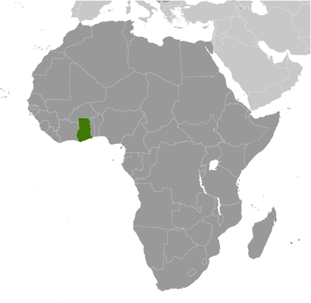
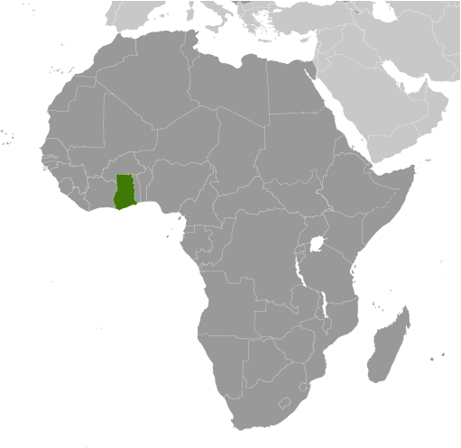

-
Introduction :: Ghana
-
Background:Formed from the merger of the British colony of the Gold Coast and the Togoland trust territory, Ghana in 1957 became the first sub-Saharan country in colonial Africa to gain its independence. Ghana endured a series of coups before Lt. Jerry RAWLINGS took power in 1981 and banned political parties. After approving a new constitution and restoring multiparty politics in 1992, RAWLINGS won presidential elections in 1992 and 1996 but was constitutionally prevented from running for a third term in 2000. John KUFUOR of the opposition New Patriotic Party (NPP) succeeded him and was reelected in 2004. John Atta MILLS of the National Democratic Congress won the 2008 presidential election and took over as head of state, but he died in July 2012 and was constitutionally succeeded by his vice president, John Dramani MAHAMA, who subsequently won the December 2012 presidential election. In 2016, however, Nana Addo Dankwa AKUFO-ADDO of the NPP defeated MAHAMA, marking the third time that the Ghana’s presidency has changed parties since the return to democracy.
-
Geography :: Ghana
-
Location:Western Africa, bordering the Gulf of Guinea, between Cote d'Ivoire and TogoGeographic coordinates:8 00 N, 2 00 WMap references:AfricaArea:total: 238,533 sq kmland: 227,533 sq kmwater: 11,000 sq kmcountry comparison to the world: 83Area - comparative:slightly smaller than OregonLand boundaries:total: 2,420 kmborder countries (3): Burkina Faso 602 km, Cote d'Ivoire 720 km, Togo 1098 kmCoastline:539 kmMaritime claims:territorial sea: 12 nmexclusive economic zone: 200 nmcontiguous zone: 24 nmcontinental shelf: 200 nmClimate:tropical; warm and comparatively dry along southeast coast; hot and humid in southwest; hot and dry in northTerrain:mostly low plains with dissected plateau in south-central areaElevation:mean elevation: 190 melevation extremes: 0 m lowest point: Atlantic Ocean885 highest point: Mount AfadjatoNatural resources:gold, timber, industrial diamonds, bauxite, manganese, fish, rubber, hydropower, petroleum, silver, salt, limestoneLand use:agricultural land: 69.1% (2011 est.)arable land: 20.7% (2011 est.) / permanent crops: 11.9% (2011 est.) / permanent pasture: 36.5% (2011 est.)forest: 21.2% (2011 est.)other: 9.7% (2011 est.)Irrigated land:340 sq km (2012)Population distribution:population is concentrated in the southern half of the country, with the highest concentrations being on or near the Atlantic coastNatural hazards:dry, dusty, northeastern harmattan winds from January to March; droughtsEnvironment - current issues:recurrent drought in north severely affects agricultural activities; deforestation; overgrazing; soil erosion; poaching and habitat destruction threaten wildlife populations; water pollution; inadequate supplies of potable waterEnvironment - international agreements:party to: Biodiversity, Climate Change, Climate Change-Kyoto Protocol, Desertification, Endangered Species, Environmental Modification, Hazardous Wastes, Law of the Sea, Ozone Layer Protection, Ship Pollution, Tropical Timber 83, Tropical Timber 94, Wetlandssigned, but not ratified: Marine Life ConservationGeography - note:Lake Volta is the world's largest artificial lake (manmade reservoir) by surface area (8,482 sq km; 3,275 sq mi); the lake was created following the completion of the Akosombo Dam in 1965, which holds back the White Volta and Black Volta Rivers
-
People and Society :: Ghana
-
Population:28,102,471 (July 2018 est.)
note: estimates for this country explicitly take into account the effects of excess mortality due to AIDS; this can result in lower life expectancy, higher infant mortality, higher death rates, lower population growth rates, and changes in the distribution of population by age and sex than would otherwise be expected
country comparison to the world: 49Nationality:noun: Ghanaian(s)adjective: GhanaianEthnic groups:Akan 47.5%, Mole-Dagbon 16.6%, Ewe 13.9%, Ga-Dangme 7.4%, Gurma 5.7%, Guan 3.7%, Grusi 2.5%, Mande 1.1%, other 1.4% (2010 est.)Languages:Asante 16%, Ewe 14%, Fante 11.6%, Boron (Brong) 4.9%, Dagomba 4.4%, Dangme 4.2%, Dagarte (Dagaba) 3.9%, Kokomba 3.5%, Akyem 3.2%, Ga 3.1%, other 31.2% (2010 est.)note: English is the official language
Religions:Christian 71.2% (Pentecostal/Charismatic 28.3%, Protestant 18.4%, Catholic 13.1%, other 11.4%), Muslim 17.6%, traditional 5.2%, other 0.8%, none 5.2% (2010 est.)Demographic profile:Ghana has a young age structure, with approximately 57% of the population under the age of 25. Its total fertility rate fell significantly during the 1980s and 1990s but has stalled at around four children per woman for the last few years. Fertility remains higher in the northern region than the Greater Accra region. On average, desired fertility has remained stable for several years; urban dwellers want fewer children than rural residents. Increased life expectancy, due to better health care, nutrition, and hygiene, and reduced fertility have increased Ghana’s share of elderly persons; Ghana’s proportion of persons aged 60+ is among the highest in sub-Saharan Africa. Poverty has declined in Ghana, but it remains pervasive in the northern region, which is susceptible to droughts and floods and has less access to transportation infrastructure, markets, fertile farming land, and industrial centers. The northern region also has lower school enrollment, higher illiteracy, and fewer opportunities for women.
Ghana was a country of immigration in the early years after its 1957 independence, attracting labor migrants largely from Nigeria and other neighboring countries to mine minerals and harvest cocoa – immigrants composed about 12% of Ghana’s population in 1960. In the late 1960s, worsening economic and social conditions discouraged immigration, and hundreds of thousands of immigrants, mostly Nigerians, were expelled.
During the 1970s, severe drought and an economic downturn transformed Ghana into a country of emigration; neighboring Cote d’Ivoire was the initial destination. Later, hundreds of thousands of Ghanaians migrated to Nigeria to work in its booming oil industry, but most were deported in 1983 and 1985 as oil prices plummeted. Many Ghanaians then turned to more distant destinations, including other parts of Africa, Europe, and North America, but the majority continued to migrate within West Africa. Since the 1990s, increased emigration of skilled Ghanaians, especially to the US and the UK, drained the country of its health care and education professionals. Internally, poverty and other developmental disparities continue to drive Ghanaians from the north to the south, particularly to its urban centers.
Age structure:0-14 years: 37.83% (male 5,344,146 /female 5,286,383)15-24 years: 18.61% (male 2,600,390 /female 2,629,660)25-54 years: 34.21% (male 4,663,234 /female 4,950,888)55-64 years: 5.05% (male 690,327 /female 727,957)65 years and over: 4.3% (male 557,155 /female 652,331) (2018 est.)population pyramid: The World Factbook Field Image ModalAfrica :: Ghana Print
The World Factbook Field Image ModalAfrica :: Ghana Print Image DescriptionThis is the population pyramid for Ghana. A population pyramid illustrates the age and sex structure of a country's population and may provide insights about political and social stability, as well as economic development. The population is distributed along the horizontal axis, with males shown on the left and females on the right. The male and female populations are broken down into 5-year age groups represented as horizontal bars along the vertical axis, with the youngest age groups at the bottom and the oldest at the top. The shape of the population pyramid gradually evolves over time based on fertility, mortality, and international migration trends.
Image DescriptionThis is the population pyramid for Ghana. A population pyramid illustrates the age and sex structure of a country's population and may provide insights about political and social stability, as well as economic development. The population is distributed along the horizontal axis, with males shown on the left and females on the right. The male and female populations are broken down into 5-year age groups represented as horizontal bars along the vertical axis, with the youngest age groups at the bottom and the oldest at the top. The shape of the population pyramid gradually evolves over time based on fertility, mortality, and international migration trends.
For additional information, please see the entry for Population pyramid on the Definitions and Notes page under the References tab.Dependency ratios:total dependency ratio: 73 (2015 est.)youth dependency ratio: 67.1 (2015 est.)elderly dependency ratio: 5.9 (2015 est.)potential support ratio: 17.1 (2015 est.)Median age:total: 21.2 yearsmale: 20.7 yearsfemale: 21.7 years (2018 est.)country comparison to the world: 185Population growth rate:2.16% (2018 est.)country comparison to the world: 40Birth rate:30.2 births/1,000 population (2018 est.)country comparison to the world: 35Death rate:6.8 deaths/1,000 population (2018 est.)country comparison to the world: 134Net migration rate:-1.8 migrant(s)/1,000 population (2017 est.)country comparison to the world: 154Population distribution:population is concentrated in the southern half of the country, with the highest concentrations being on or near the Atlantic coastUrbanization:urban population: 56.1% of total population (2018)rate of urbanization: 3.34% annual rate of change (2015-20 est.)Major urban areas - population:3.065 million Kumasi, 2.439 million ACCRA (capital), 855,000 Sekondi Takoradi (2018)Sex ratio:at birth: 1.02 male(s)/female (2017 est.)0-14 years: 1.01 male(s)/female (2017 est.)15-24 years: 0.99 male(s)/female (2017 est.)25-54 years: 0.94 male(s)/female (2017 est.)55-64 years: 0.95 male(s)/female (2017 est.)65 years and over: 0.86 male(s)/female (2017 est.)total population: 0.97 male(s)/female (2017 est.)Mother's mean age at first birth:22.3 years (2017 est.)note: median age at first birth among women 25-29
Maternal mortality rate:319 deaths/100,000 live births (2015 est.)country comparison to the world: 39Infant mortality rate:total: 34.1 deaths/1,000 live births (2018 est.)male: 38 deaths/1,000 live births (2018 est.)female: 30.1 deaths/1,000 live births (2018 est.)country comparison to the world: 52Life expectancy at birth:total population: 67.4 years (2018 est.)male: 64.9 years (2018 est.)female: 70 years (2018 est.)country comparison to the world: 172Total fertility rate:3.96 children born/woman (2018 est.)country comparison to the world: 34Contraceptive prevalence rate:33% (2017)Health expenditures:3.6% of GDP (2014)country comparison to the world: 170Physicians density:0.1 physicians/1,000 population (2010)Hospital bed density:0.9 beds/1,000 population (2011)Drinking water source:improved: urban: 92.6% of populationrural: 84% of populationtotal: 88.7% of populationunimproved: urban: 7.4% of populationrural: 16% of populationtotal: 11.3% of population (2015 est.)Sanitation facility access:improved: urban: 20.2% of population (2015 est.)rural: 8.6% of population (2015 est.)total: 14.9% of population (2015 est.)unimproved: urban: 79.8% of population (2015 est.)rural: 91.4% of population (2015 est.)total: 85.1% of population (2015 est.)HIV/AIDS - adult prevalence rate:1.7% (2017 est.)country comparison to the world: 29HIV/AIDS - people living with HIV/AIDS:310,000 (2017 est.)country comparison to the world: 22HIV/AIDS - deaths:16,000 (2017 est.)country comparison to the world: 14Major infectious diseases:degree of risk: very high (2016)food or waterborne diseases: bacterial and protozoal diarrhea, hepatitis A, and typhoid fever (2016)vectorborne diseases: malaria, dengue fever, and yellow fever (2016)water contact diseases: schistosomiasis (2016)animal contact diseases: rabies (2016)respiratory diseases: meningococcal meningitis (2016)Obesity - adult prevalence rate:10.9% (2016)country comparison to the world: 136Children under the age of 5 years underweight:11% (2014)country comparison to the world: 58Education expenditures:6.2% of GDP (2014)country comparison to the world: 31Literacy:definition: age 15 and over can read and write (2015 est.)total population: 76.6% (2015 est.)male: 82% (2015 est.)female: 71.4% (2015 est.)School life expectancy (primary to tertiary education):total: 12 years (2015)male: 12 years (2015)female: 12 years (2015)Unemployment, youth ages 15-24:total: 15.2% (2015 est.)male: 15.8% (2015 est.)female: 14.6% (2015 est.)country comparison to the world: 86 -
Government :: Ghana
-
Country name:conventional long form: Republic of Ghanaconventional short form: Ghanaformer: Gold Coastetymology: named for the medieval West African kingdom of the same name, but whose location was actually further north than the modern countryGovernment type:presidential republicCapital:name: Accrageographic coordinates: 5 33 N, 0 13 Wtime difference: UTC 0 (5 hours ahead of Washington, DC, during Standard Time)Administrative divisions:10 regions; Ashanti, Brong-Ahafo, Central, Eastern, Greater Accra, Northern, Upper East, Upper West, Volta, WesternIndependence:6 March 1957 (from the UK)National holiday:Independence Day, 6 March (1957)Constitution:history: several previous; latest drafted 31 March 1992, approved and promulgated 28 April 1992, entered into force 7 January 1993 (2017)amendments: proposed by Parliament; consideration requires prior referral to the Council of State, a body of prominent citizens who advise the president of the republic; passage of amendments to "entrenched" constitutional articles (including those on national sovereignty, fundamental rights and freedoms, the structure and authorities of the branches of government, and amendment procedures) requires approval in a referendum by at least 40% participation of eligible voters and at least 75% of votes cast, followed by at least two-thirds majority vote in Parliament, and assent by the president; amendments to non-entrenched articles do not require referenda; amended 1996 (2017)Legal system:mixed system of English common law and customary lawInternational law organization participation:has not submitted an ICJ jurisdiction declaration; accepts ICCt jurisdictionCitizenship:citizenship by birth: nocitizenship by descent only: at least one parent or grandparent must be a citizen of Ghanadual citizenship recognized: yesresidency requirement for naturalization: 5 yearsSuffrage:18 years of age; universalJudicial branch:highest courts: Supreme Court (consists of a chief justice and 12 justices)judge selection and term of office: chief justice appointed by the president in consultation with the Council of State (a small advisory body of prominent citizens) and with the approval of Parliament; other justices appointed by the president upon the advice of the Judicial Council (an 18-member independent body of judicial, military and police officials, and presidential nominees) and on the advice of the Council of State; justices can retire at age 60, with compulsory retirement at age 70subordinate courts: Court of Appeal; High Court; Circuit Court; District Court; regional tribunalsExecutive branch:chief of state: President Nana Addo Dankwa AKUFO-ADDO (since 7 January 2017); Vice President Mahamudu BAWUMIA (since 7 January 2017); the president is both chief of state and head of governmenthead of government: President Nana Addo Dankwa AKUFO-ADDO (since 7 January 2017); Vice President Mahamudu BAWUMIA (since 7 January 2017)cabinet: Council of Ministers; nominated by the president, approved by Parliamentelections/appointments: president and vice president directly elected on the same ballot by absolute majority popular vote in 2 rounds if needed for a 4-year term (eligible for a second term); election last held on 7 December 2016 (next to be held in December 2020)election results: Nana Addo Dankwa AKUFO-ADDO elected president in the first round; percent of vote - Nana Addo Dankwa AKUFO-ADDO (NPP) 53.7%, John Dramani MAHAMA (NDC) 44.5%, other 1.8%Legislative branch:description: unicameral Parliament (275 seats; members directly elected in single-seat constituencies by simple majority vote to serve 4-year terms)elections: last held on 7 December 2016 (next to be held in December 2020)election results: percent of vote by party - NPP 54%, NDC 44%, other 2%; seats by party - NPP 171, NDC 104Political parties and leaders:
note: Ghana has more than 20 registered parties; included are 5 of the more popular parties as of May 2017
International organization participation:ACP, AfDB, AU, C, ECOWAS, EITI (compliant country), FAO, G-24, G-77, IAEA, IBRD, ICAO, ICC (national committees), ICCt, ICRM, IDA, IFAD, IFC, IFRCS, ILO, IMF, IMO, IMSO, Interpol, IOC, IOM, IPU, ISO, ITSO, ITU, ITUC (NGOs), MIGA, MINURSO, MINUSMA, MONUSCO, NAM, OAS (observer), OIF, OPCW, UN, UNAMID, UNCTAD, UNESCO, UNHCR, UNIDO, UNIFIL, UNISFA, UNMIL, UNMISS, UNOCI, UNWTO, UPU, WCO, WFTU (NGOs), WHO, WIPO, WMO, WTODiplomatic representation in the US:chief of mission: Ambassador Barfour ADJEI-BARWUAH (since 21 July 2017)chancery: 3512 International Drive NW, Washington, DC 20008telephone: [1] (202) 686-4520FAX: [1] (202) 686-4527consulate(s) general: New YorkDiplomatic representation from the US:chief of mission: Ambassador Robert P. JACKSON (since 4 February 2016)embassy: 24 Fourth Circular Rd., Cantonments, Accramailing address: P.O. Box 194, Accratelephone: [233] 030-274-1000FAX: [233] 030-274-1389Flag description:three equal horizontal bands of red (top), yellow, and green, with a large black five-pointed star centered in the yellow band; red symbolizes the blood shed for independence, yellow represents the country's mineral wealth, while green stands for its forests and natural wealth; the black star is said to be the lodestar of African freedomnote: uses the popular Pan-African colors of Ethiopia; similar to the flag of Bolivia, which has a coat of arms centered in the yellow band
National symbol(s):black star, golden eagle; national colors: red, yellow, green, blackNational anthem:name: God Bless Our Homeland Ghanalyrics/music: unknown/Philip GBEHOnote: music adopted 1957, lyrics adopted 1966; the lyrics were changed twice, in 1960 when a republic was declared and after a 1966 coup
-
Economy :: Ghana
-
Economy - overview:
Ghana has a market-based economy with relatively few policy barriers to trade and investment in comparison with other countries in the region, and Ghana is endowed with natural resources. Ghana's economy was strengthened by a quarter century of relatively sound management, a competitive business environment, and sustained reductions in poverty levels, but in recent years has suffered the consequences of loose fiscal policy, high budget and current account deficits, and a depreciating currency.
Agriculture accounts for about 20% of GDP and employs more than half of the workforce, mainly small landholders. Gold, oil, and cocoa exports, and individual remittances, are major sources of foreign exchange. Expansion of Ghana’s nascent oil industry has boosted economic growth, but the fall in oil prices since 2015 reduced by half Ghana’s oil revenue. Production at Jubilee, Ghana's first commercial offshore oilfield, began in mid-December 2010. Production from two more fields, TEN and Sankofa, started in 2016 and 2017 respectively. The country’s first gas processing plant at Atuabo is also producing natural gas from the Jubilee field, providing power to several of Ghana’s thermal power plants.
As of 2018, key economic concerns facing the government include the lack of affordable electricity, lack of a solid domestic revenue base, and the high debt burden. The AKUFO-ADDO administration has made some progress by committing to fiscal consolidation, but much work is still to be done. Ghana signed a $920 million extended credit facility with the IMF in April 2015 to help it address its growing economic crisis. The IMF fiscal targets require Ghana to reduce the deficit by cutting subsidies, decreasing the bloated public sector wage bill, strengthening revenue administration, boosting tax revenues, and improving the health of Ghana’s banking sector. Priorities for the new administration include rescheduling some of Ghana’s $31 billion debt, stimulating economic growth, reducing inflation, and stabilizing the currency. Prospects for new oil and gas production and follow through on tighter fiscal management are likely to help Ghana’s economy in 2018.
GDP (purchasing power parity):$134 billion (2017 est.)$123.6 billion (2016 est.)$119.2 billion (2015 est.)note: data are in 2017 dollars
country comparison to the world: 80GDP (official exchange rate):$47.02 billion (2017 est.) (2017 est.)GDP - real growth rate:8.4% (2017 est.)3.7% (2016 est.)3.8% (2015 est.)country comparison to the world: 7GDP - per capita (PPP):$4,700 (2017 est.)$4,500 (2016 est.)$4,400 (2015 est.)note: data are in 2017 dollars
country comparison to the world: 172Gross national saving:9% of GDP (2017 est.)7.8% of GDP (2016 est.)9% of GDP (2015 est.)country comparison to the world: 167GDP - composition, by end use:household consumption: 80.1% (2017 est.)government consumption: 8.6% (2017 est.)investment in fixed capital: 13.7% (2017 est.)investment in inventories: 1.1% (2017 est.)exports of goods and services: 43% (2017 est.)imports of goods and services: -46.5% (2017 est.)GDP - composition, by sector of origin:agriculture: 18.3% (2017 est.)industry: 24.5% (2017 est.)services: 57.2% (2017 est.)Agriculture - products:cocoa, rice, cassava (manioc, tapioca), peanuts, corn, shea nuts, bananas; timberIndustries:mining, lumbering, light manufacturing, aluminum smelting, food processing, cement, small commercial ship building, petroleumIndustrial production growth rate:16.7% (2017 est.)country comparison to the world: 2Labor force:12.49 million (2017 est.)country comparison to the world: 47Labor force - by occupation:agriculture: 44.7%industry: 14.4%services: 40.9% (2013 est.)Unemployment rate:11.9% (2015 est.)5.2% (2013 est.)country comparison to the world: 158Population below poverty line:24.2% (2013 est.)Distribution of family income - Gini index:42.3 (2012-13)
41.9 (2005-06)Budget:revenues: 9.544 billion (2017 est.)expenditures: 12.36 billion (2017 est.)Taxes and other revenues:20.3% (of GDP) (2017 est.)country comparison to the world: 149Budget surplus (+) or deficit (-):-6% (of GDP) (2017 est.)country comparison to the world: 183Public debt:71.8% of GDP (2017 est.)73.4% of GDP (2016 est.)country comparison to the world: 46Fiscal year:calendar yearInflation rate (consumer prices):12.4% (2017 est.)17.5% (2016 est.)country comparison to the world: 206Central bank discount rate:20% (31 December 2017)25.5% (31 December 2016)country comparison to the world: 5Commercial bank prime lending rate:30.35% (31 December 2017 est.)31.26% (31 December 2016 est.)country comparison to the world: 4Stock of narrow money:$7.018 billion (31 December 2017 est.)$6.472 billion (31 December 2016 est.)country comparison to the world: 91Stock of broad money:$7.018 billion (31 December 2017 est.)$6.472 billion (31 December 2016 est.)country comparison to the world: 93Stock of domestic credit:$14.25 billion (31 December 2017 est.)$13.67 billion (31 December 2016 est.)country comparison to the world: 99Current account balance:-$2.131 billion (2017 est.)-$2.86 billion (2016 est.)country comparison to the world: 168Exports:$13.84 billion (2017 est.)$11.14 billion (2016 est.)country comparison to the world: 79Exports - partners:India 23.8%, UAE 13.4%, China 10.8%, Switzerland 10.1%, Vietnam 5.2%, Burkina Faso 4% (2017)Exports - commodities:oil, gold, cocoa, timber, tuna, bauxite, aluminum, manganese ore, diamonds, horticultural productsImports:$12.65 billion (2017 est.)$12.91 billion (2016 est.)country comparison to the world: 93Imports - commodities:capital equipment, refined petroleum, foodstuffsImports - partners:China 16.8%, US 8%, UK 6.2%, Belgium 5.9%, India 4.1% (2017)Reserves of foreign exchange and gold:$7.555 billion (31 December 2017 est.)$6.162 billion (31 December 2016 est.)country comparison to the world: 81Debt - external:$22.14 billion (31 December 2017 est.)$16.5 billion (31 December 2016 est.)country comparison to the world: 90Stock of direct foreign investment - at home:$19.85 billion (31 December 2013 est.)$118 million (31 December 2012 est.)country comparison to the world: 79Stock of direct foreign investment - abroad:$16.62 billion (31 December 2013 est.)$109 million (31 December 2012 est.)country comparison to the world: 59Exchange rates:cedis (GHC) per US dollar -4.385 (2017 est.)3.909 (2016 est.)3.909 (2015 est.)3.712 (2014 est.)2.895 (2013 est.) -
Energy :: Ghana
-
Electricity access:population without electricity: 7.3 million (2013)electrification - total population: 72% (2013)electrification - urban areas: 92% (2013)electrification - rural areas: 50% (2013)Electricity - production:12.52 billion kWh (2016 est.)country comparison to the world: 94Electricity - consumption:9.363 billion kWh (2016 est.)country comparison to the world: 99Electricity - exports:187 million kWh (2016 est.)country comparison to the world: 76Electricity - imports:511 million kWh (2016 est.)country comparison to the world: 79Electricity - installed generating capacity:3.801 million kW (2016 est.)country comparison to the world: 92Electricity - from fossil fuels:58% of total installed capacity (2016 est.)country comparison to the world: 135Electricity - from nuclear fuels:0% of total installed capacity (2017 est.)country comparison to the world: 96Electricity - from hydroelectric plants:42% of total installed capacity (2017 est.)country comparison to the world: 48Electricity - from other renewable sources:1% of total installed capacity (2017 est.)country comparison to the world: 153Crude oil - production:151,000 bbl/day (2017 est.)country comparison to the world: 38Crude oil - exports:104,000 bbl/day (2017 est.)country comparison to the world: 34Crude oil - imports:6,220 bbl/day (2015 est.)country comparison to the world: 74Crude oil - proved reserves:660 million bbl (1 January 2018 est.)country comparison to the world: 41Refined petroleum products - production:2,073 bbl/day (2015 est.)country comparison to the world: 104Refined petroleum products - consumption:90,000 bbl/day (2016 est.)country comparison to the world: 83Refined petroleum products - exports:2,654 bbl/day (2015 est.)country comparison to the world: 100Refined petroleum products - imports:85,110 bbl/day (2015 est.)country comparison to the world: 59Natural gas - production:914.4 million cu m (2017 est.)country comparison to the world: 68Natural gas - consumption:1.232 billion cu m (2017 est.)country comparison to the world: 87Natural gas - exports:0 cu m (2017 est.)country comparison to the world: 110Natural gas - imports:317.4 million cu m (2017 est.)country comparison to the world: 68Natural gas - proved reserves:22.65 billion cu m (1 January 2018 est.)country comparison to the world: 73Carbon dioxide emissions from consumption of energy:13.67 million Mt (2017 est.)country comparison to the world: 96
-
Communications :: Ghana
-
Telephones - fixed lines:total subscriptions: 301,551 (2017 est.)subscriptions per 100 inhabitants: 1 (2017 est.)country comparison to the world: 112Telephones - mobile cellular:total subscriptions: 36,751,761 (2017 est.)subscriptions per 100 inhabitants: 134 (2017 est.)country comparison to the world: 38Telephone system:general assessment: primarily microwave radio relay; wireless local loop has been installed; 2019 to bring universal access licences; government invested in fibre infrastructure; one of the most active mobile markets in Africa (2017)domestic: fixed-line 1 per 100 subscriptions; competition among multiple mobile-cellular providers has spurred growth with a subscribership of more than 140 per 100 persons and rising (2017)international: country code - 233; landing point for the SAT-3/WASC, Main One, and GLO-1 fiber-optic submarine cables that provide connectivity to South Africa, Europe, and Asia; satellite earth stations - 4 Intelsat (Atlantic Ocean); microwave radio relay link to Panaftel system connects Ghana to its neighbors (2016)Broadcast media:state-owned TV station, 2 state-owned radio networks; several privately owned TV stations and a large number of privately owned radio stations; transmissions of multiple international broadcasters are accessible; several cable and satellite TV subscription services are obtainable (2007)Internet country code:.ghInternet users:total: 9,328,018 (July 2016 est.)percent of population: 34.7% (July 2016 est.)country comparison to the world: 49Broadband - fixed subscriptions:total: 56,810 (2017 est.)subscriptions per 100 inhabitants: less than 1 (2017 est.)country comparison to the world: 128
-
Transportation :: Ghana
-
National air transport system:number of registered air carriers: 4 (2015)inventory of registered aircraft operated by air carriers: 8 (2015)annual passenger traffic on registered air carriers: 390,457 (2015)annual freight traffic on registered air carriers: 844,630 mt-km (2015)Civil aircraft registration country code prefix:9G (2016)Airports:10 (2013)country comparison to the world: 155Airports - with paved runways:total: 7 (2017)over 3,047 m: 1 (2017)2,438 to 3,047 m: 1 (2017)1,524 to 2,437 m: 3 (2017)914 to 1,523 m: 2 (2017)Airports - with unpaved runways:total: 3 (2013)914 to 1,523 m: 3 (2013)Pipelines:394 km gas, 20 km oil, 361 km refined products (2013)Railways:total: 947 km (2014)narrow gauge: 947 km 1.067-m gauge (2014)country comparison to the world: 92Roadways:total: 109,515 km (2009)paved: 13,787 km (2009)unpaved: 95,728 km (2009)country comparison to the world: 45Waterways:1,293 km (168 km for launches and lighters on Volta, Ankobra, and Tano Rivers; 1,125 km of arterial and feeder waterways on Lake Volta) (2011)country comparison to the world: 56Merchant marine:total: 44 (2017)by type: general cargo 6, oil tanker 2, other 36 (2017)country comparison to the world: 117Ports and terminals:major seaport(s): Takoradi, Tema
-
Military and Security :: Ghana
-
Military expenditures:0.4% of GDP (2017)0.38% of GDP (2016)0.52% of GDP (2015)0.68% of GDP (2014)0.53% of GDP (2013)country comparison to the world: 147Military branches:Ghana Army, Ghana Navy, Ghana Air Force (2012)Military service age and obligation:18-26 years of age for voluntary military service, with basic education certificate; no conscription; must be HIV/AIDS negative (2012)
-
Transnational Issues :: Ghana
-
Disputes - international:disputed maritime border between Ghana and Cote d'IvoireRefugees and internally displaced persons:refugees (country of origin): 6,623 (Cote d'Ivoire) (flight from 2010 post-election fighting) (2018)Trafficking in persons:current situation: Ghana is a source, transit, and destination country for men, women, and children subjected to forced labor and sex trafficking; the trafficking of Ghanians, particularly children, internally is more common than the trafficking of foreign nationals; Ghanian children are subjected to forced labor in fishing, domestic service, street hawking, begging, portering, mining, quarrying, herding, and agriculture, with girls, and to a lesser extent boys, forced into prostitution; Ghanian women, sometimes lured with legitimate job offers, and girls are sex trafficked in West Africa, the Middle East, and Europe; Ghanian men fraudulently recruited for work in the Middle East are subjected to forced labor or prostitution, and a few Ghanian adults have been identified as victims of false labor in the US; women and girls from Vietnam, China, and neighboring West African countries are sex trafficked in Ghana; the country is also a transit point for sex trafficking from West Africa to Europetier rating: Tier 2 Watch List - Ghana does not fully comply with the minimum standards for the elimination of trafficking; however, it is making significant efforts to do so; Ghana continued to investigate and prosecute trafficking offenses but was unable to ramp up its anti-trafficking efforts in 2014 because the government failed to provide law enforcement or protection agencies with operating budgets; victim protection efforts decreased in 2014, with significantly fewer victims identified; most child victims were referred to NGO-run facilities, but care for adults was lacking because the government did not provide any support to the country’s Human Trafficking Fund for victim services or its two shelters; anti-trafficking prevention measures increased modestly, including reconvening of the Human Trafficking Management Board, public awareness campaigns on child labor and trafficking, and anti-trafficking TV and radio programs (2015)Illicit drugs:illicit producer of cannabis for the international drug trade; major transit hub for Southwest and Southeast Asian heroin and, to a lesser extent, South American cocaine destined for Europe and the US; widespread crime and money-laundering problem, but the lack of a well-developed financial infrastructure limits the country's utility as a money-laundering center; significant domestic cocaine and cannabis use
Africa ::
Ghana